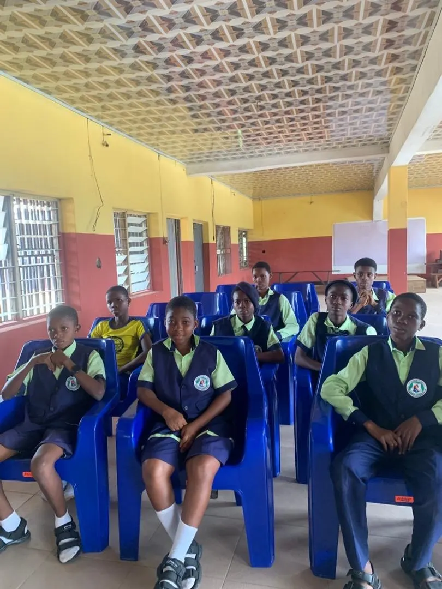
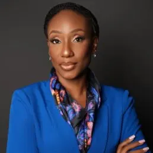
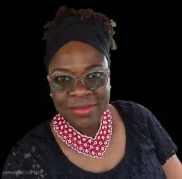

Economic Empowerment
We offer financial literacy training, vocational development, and support for small-scale businesses to foster economic growth and independence.
Lifting Lives & Community Initiatives (LIFT) is a non-profit organisation dedicated to transforming lives and communities across Nigeria.
Founded with the vision of addressing socio-economic challenges that influence health outcomes, LIFT focuses on empowering vulnerable populations, particularly young girls and women, through innovative and sustainable approaches.
To drive sustainable development and promote economic empowerment through innovative approaches that empower vulnerable populations (especially young girls and women), enhance communities, and transform lives across Nigeria.

We believe in addressing the root causes of socio-economic challenges to create lasting impact. Our approach is built on three key strategies.
We offer financial literacy training, vocational development, and support for small-scale businesses to foster economic growth and independence.
We use research and literature to understand and address the socio-economic factors contributing to health disparities.
We leverage digital platforms to deliver health education, promote behaviour change, and collaborate with private sector organisations for technology-driven initiatives.

Dr. Uche Ralph-Opara is the Founder of Lifting Lives & Communities Initiative (LIFT), an independent nonprofit committed to expanding opportunity for women, girls, and underserved communities.
She established LIFT from a long-held belief that talent exists everywhere, but access does not. After nearly two decades working across global health and development, she saw firsthand how mentorship, education, and economic opportunity can alter the trajectory of a young person’s life. LIFT was created to help bridge that gap at the community level.
Through LIFT, Dr. Ralph-Opara champions initiatives that equip adolescent girls and young women with practical skills, digital access, leadership development, and confidence to pursue their goals. The organization also supports community-based efforts that promote resilience, dignity, and sustainable growth.
As Founder, she provides strategic vision and oversight in her personal capacity, ensuring that LIFT remains community-rooted, transparent, and focused on measurable impact.
She believes that when women and young people are empowered with the right tools and support, communities flourish.

Dr. Olajumoke Azogu is a Monitoring, Evaluation, and Learning (MEL) expert with over 16 years of experience strengthening data and information systems in public health programs across Africa. She holds a PhD in Information Science from the University of North Texas and has led MEL initiatives for organizations funded by USAID, the Bill & Melinda Gates Foundation, The Global Fund, and other global partners.
Her professional background spans HIV/AIDS, reproductive, maternal, newborn and child health, nutrition, malaria, and health systems strengthening. With a strong foundation in computer science and data analytics, she is passionate about using evidence and innovation to drive impact.
Beyond her technical expertise, Dr. Azogu is committed to mentorship and empowering the next generation of women leaders. As a member of the Board, she brings her experience, vision, and dedication to advancing opportunities for girls to thrive and succeed in their chosen careers.
Empowering communities, supporting economic growth and transforming lives across Nigeria.
Organisations, schools and companies can co-host programmes, sponsor bootcamps or provide equipment such as laptops for participants.
Email our team →Support our mission with generous donations to make a difference together. Contact us and we will share how to give and how your gift is used.
Ask how to give →Become a volunteer to empower others and create positive change in communities, as a mentor, trainer or event helper.
Register your interest →